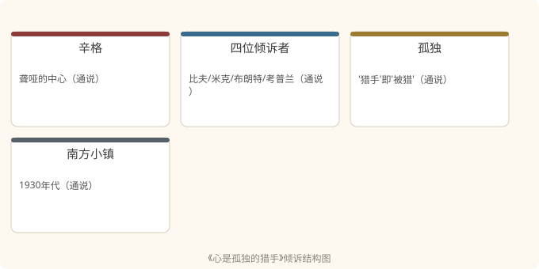

心是孤独的猎手
一、基本信息
| 作者 | 卡森·麦卡勒斯 |
|---|---|
| 成书/出版 | 1940年（作者页 B331 口径：The Heart Is a Lonely Hunter (1940)） Carson McCullers — Encyclopaedia Britannica（百科全书） |
| 国别/地区 | 美国 |
| 时代 | 现当代 · 20世纪 |
| 体裁 | 长篇小说 |
| 语言 | 英语 |

《心是孤独的猎手》倾诉结构图（主题·结构图）
二、创作背景
作者页（B331）：'her novels……depict the inner lives of lonely people in the small towns of the South'——本作为其成名作（B331 作者页定位）。
题材（通说待核）：聋哑人辛格与四位'倾诉者'——南方小镇的精神孤独。
三、内容脉络
哑巴辛格成为小镇精神中心——四位倾诉者的孤独（通说待核）。
辛格自杀——孤独的崩塌（通说待核）。
四、主要人物表
| 人物 | 身份 | 说明 |
|---|---|---|
| 辛格 | 聋哑人 | 倾诉的中心（通说待核） |
| 比夫 | 咖啡馆主 | （通说待核） |
| 米克 | 少女 | （通说待核） |
| 杰克·布朗特 | 流浪者 | （通说待核） |
五、主题与艺术特点
- '孤独的猎手'：倾诉与误解（书名通说待核）。
- 南方小镇的'格格不入'（B331：misfits and outcast characters）。
- 种族与阶级（通说待核）。
六、影响与评论
- 作者页：麦卡勒斯成名作（B331 作者页口径）。
Carson McCullers — Encyclopaedia Britannica（百科全书） - 作者页：'spiritual isolation'主题（B331 作者级定位）。
Carson McCullers — Encyclopaedia Britannica（百科全书）
七、阅读建议
难点
- 多人物视角。
- '孤独'主题的密度。
- 《心是孤独的猎手》（人民文学出版社/上海三联版本，通说待核）。
- 英文原版。
麦卡勒斯首选。
八、待核实
- 1940年出版（Houghton Mifflin说）核对。
- 辛格（John Singer）/比夫/米克/布朗特人名核对。
- 1968年电影改编待核。
本页主要来源
相关作品：